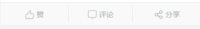

CSS
设置全局CSS样式，定义圆角、边框、尺寸等。
设置全局CSS样式，定义圆角、边框、尺寸等。
定义元素的圆角半径radius
| 元素 | 属性 | 值 | 描述 |
|---|---|---|---|
| 任何元素 | class | noradius | 圆角半径 |
| radius4 | |||
| radius8 | radius40 | ||
| radiusround |
定义了元素的宽高尺寸size
| 元素 | 属性 | 值 | 描述 |
|---|---|---|---|
| 标签 | class | size8 | 定义宽高，字体大小 |
| size12 | |||
| size14 | |||
| size16 | |||
| size20 | |||
| size24 | |||
| size28 | |||
| size30 | |||
| size32 | |||
| size40 | |||
| size50 | |||
| size54 | |||
| size60 | |||
| size80 | |||
| 头像控件 | class | photo | 照片 |
定义了元素的高度margin|padding|space|rowspace|indent
| 元素 | 属性 | 值 | 描述 |
|---|---|---|---|
| 任何元素 | class | margin8 | 外间距 |
| lrmargin8 | 左右外间距 | ||
| tbmargin8 | 上下外间距 | ||
| nomargin | 无外间距 | ||
| 任何元素 | class | padding8 | 内间距 |
| lrpadding8 | 左右内间距 | ||
| tbpadding8 | 上下内间距 | ||
| nopadding | 无内间距 | ||
| 任何元素 | class | space8 | 宽度间距 |
| 任何元素 | class | rowspace8 | 高度间距 |
| 任何元素 | class | indent8 | 道行缩进 |
| 任何元素 | class | lineheight0 | 行高为0 |
定义了文字的样式sliver|paragraph|capitalize|uppercase|lowercase|bold
| 元素 | 属性 | 值 | 描述 |
|---|---|---|---|
| 任何元素 | class | sliver | 条子标题 |
| 任何元素 | class | paragraph | 段落 |
| 任何元素 | class | capitalize | 首字母大写 |
| 任何元素 | class | uppercase | 大写 |
| 任何元素 | class | lowercase | 小写 |
| 任何元素 | class | bold | 加粗 |
定义了很多元素对齐方式box..|self-middle..|horizontal|float-left..|tb..|text-left..
| 元素 | 属性 | 值 | 描述 |
|---|---|---|---|
| div弹性盒子(盒子内部) | class | box | 自适应区域 |
| box-left | 左对齐 | ||
| box-center | 水平居中 | ||
| box-right | 右对齐 | ||
| box-top | 上对齐 | ||
| box-middle | 垂直居中 | ||
| box-bottom | 下对齐 | ||
| box-middlecenter | 水平垂直居中 | ||
| 弹性盒子内部元素 | class | box-flex-1 | 弹性率1 |
| 任何元素(内部文字) | class | tb | 上下 |
| bt | 下上 | ||
| tb-lr | 上下，左右 | ||
| tb-rl | 上下，右左 | ||
| lr | 左右 | ||
| rl | 右左 | ||
| div标签(内部元素) | class | horizontal | 水平排列 |
| 任何元素(自身浮动) | class | float-left | 左浮动 |
| float-right | 右浮动 | ||
| 内部文字 | class | text-left | 左对齐 |
| text-center | 水平居中 | ||
| text-right | 右对齐 |
定义了控件线条的样式border|dotted|underline|noborder
| 元素 | 属性 | 值 | 描述 |
|---|---|---|---|
| 任何元素 | class | border | 显示实线 |
| dotted | 显示虚线 | ||
| underline | 下划线 | ||
| noborder | 去线或者去边框 |
定义了元素每行列数
| 元素 | 属性 | 值 | 描述 |
|---|---|---|---|
| .card>.card-handler控件 | data-col | 2,3,4 | 详见group1.html |
| 包含.tab的元素 | data-col | 2,3,4,5,6 | 每行列数 |
| .grid栅格控件 | data-col | 2,3,4,5 | 每行列数 |
定义了部分元素反转色
| 元素 | 属性 | 值 | 描述 |
|---|---|---|---|
| .switch开关控件 | class | reverse | 颜色反转 |
| .titlebar头部导航控件 | class | reverse | 颜色反转 |
| .tablebar头部导航控件 | class | reverse | 颜色反转 |
| .menubar底部导航控件 | class | reverse | 颜色反转 |
| .input-box表单元素框控件 | class | reverse | 颜色反转 |